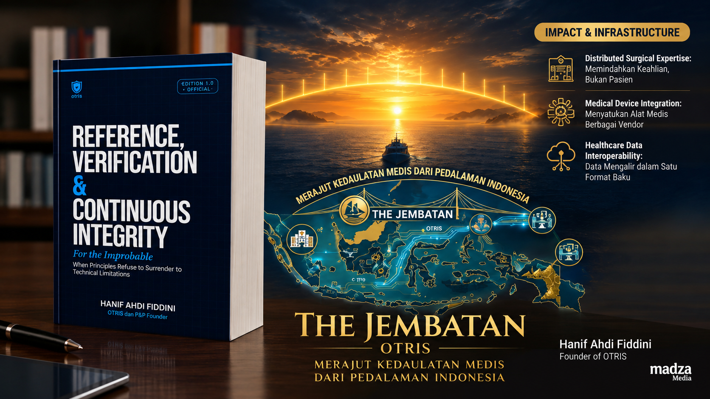
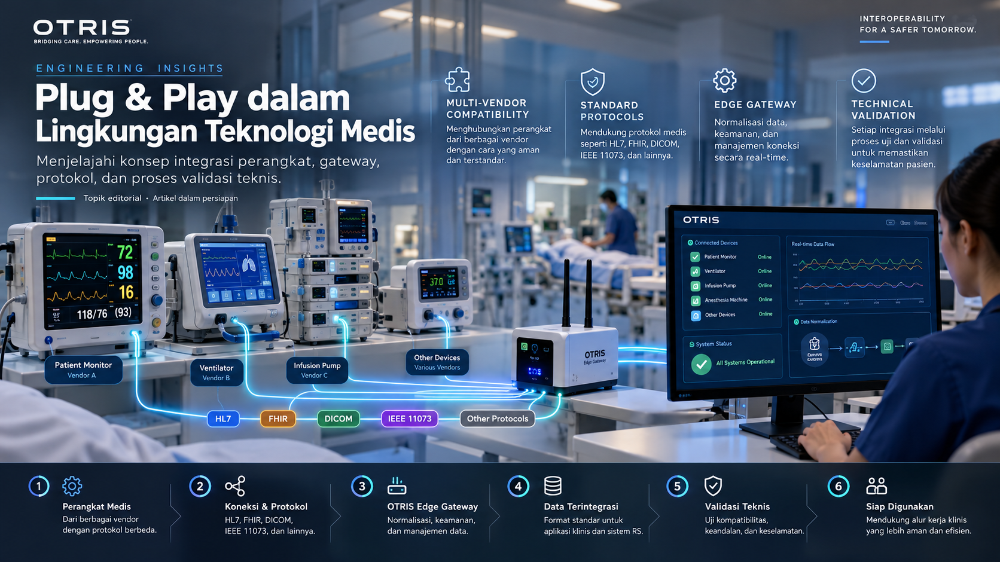

Health Technology
Interoperabilitas: Menghubungkan Perangkat Medis Tanpa Mengganti Semuanya
Memahami pendekatan integrasi sistem kesehatan yang menghormati investasi dan infrastruktur rumah sakit.
Ruang publikasi OTRIS untuk pemikiran, pengetahuan teknis, dan wawasan tentang interoperabilitas teknologi kesehatan serta masa depan layanan medis.
Jelajahi Publikasi →
Memahami pendekatan integrasi sistem kesehatan yang menghormati investasi dan infrastruktur rumah sakit.

Menjelajahi konsep integrasi perangkat, gateway, protokol, dan proses validasi teknis.

Memperkenalkan prinsip-prinsip yang menjadi landasan pengembangan ekosistem OTRIS.
OTRIS Media merupakan kanal publikasi yang dikelola dalam ekosistem OTRIS oleh PT. Hematech Nusantara. Kanal ini menyajikan pemikiran, edukasi, dokumentasi teknis, dan perspektif inovasi teknologi kesehatan.
Konten editorial, opini, dan informasi produk akan dibedakan secara jelas. Publikasi tidak dimaksudkan sebagai pengganti keputusan klinis atau bukti penerapan sistem pada fasilitas kesehatan tertentu.
Kontak: info@otris.id